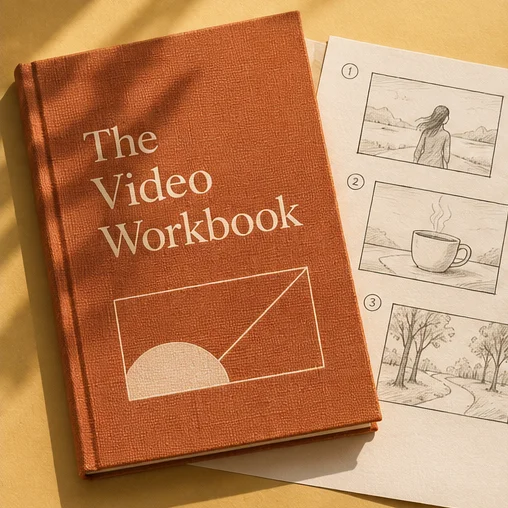

Premium edition
The Video Workbook
Premium ebook · Preview edition
A workbook for the part of video-making that happens before you press record. Give each shot a job, draft a short voiceover, and build a caption pass into your edit.
RM39Planned price
The full workbook is in preparation.
Inside
What’s inside
- Choose a story you can film in one location
- Build a shot list around the voiceover
- Check timing and captions before export
From the pages
Sample exercise · One scene, three shots
Pick an everyday action, like packing a lunch. Write down a wide shot that sets the scene, a close-up that shows the action, and a final shot that shows the result. Ask an AI assistant for two possible voiceovers. Read each aloud while timing the sequence.